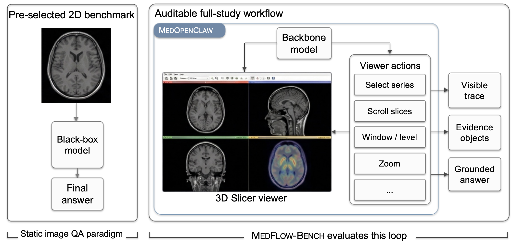

01
Longitudinal Analysis
Comparison across timepoints to inspect tumor size and overall lesion extent within a full-study workflow.
Auditable Medical Imaging Agents Reasoning over Uncurated Full Studies
Comparison across timepoints to inspect tumor size and overall lesion extent within a full-study workflow.
A multimodal CT/PET example aligned with the paper’s qualitative demonstration setting.
Viewpoint adjustment until the tumor becomes the most conspicuous and clinically inspectable target.
A failure mode showing how the interaction trace breaks when segmentation is unreliable.



Use the following BibTeX entry to cite the paper.
@misc{shen2026medopenclawauditablemedicalimaging,
title={MedOpenClaw: Auditable Medical Imaging Agents Reasoning over Uncurated Full Studies},
author={Weixiang Shen and Yanzhu Hu and Che Liu and Junde Wu and Jiayuan Zhu and Chengzhi Shen and Min Xu and Yueming Jin and Benedikt Wiestler and Daniel Rueckert and Jiazhen Pan},
year={2026},
eprint={2603.24649},
archivePrefix={arXiv},
primaryClass={cs.CV},
url={https://arxiv.org/abs/2603.24649},
}